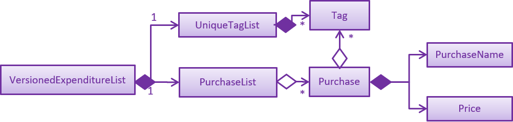

By: Team T08-2 Since: May 2019 Licence: MIT
- 1. Introduction
- 2. About this Developer Guide
- 3. Setting up
- 4. Design
- 5. Implementation
- 6. Documentation
- 7. Testing
- 8. Dev Ops
- Appendix A: Product Scope
- Appendix B: User Stories
- Appendix C: Use Cases
- C.1. Use case: Edit a task
- C.2. Use Case: Delete a Task
- C.3. Use Case: Tick Task
- C.4. Use Case: Sort Task
- C.5. Use Case: Add a new purchase
- C.6. Use Case: View Expenditure List
- C.7. Use Case: Clear Expenditure List
- C.8. Use Case: Find a specific purchase
- C.9. Use Case: Start Stopwatch
- C.10. Use Case: Stop Stopwatch
- C.11. Use Case: Record Completed Workout
- C.12. Use Case: View Workout Log
- Appendix D: Non Functional Requirements
- Appendix E: Glossary
- Appendix F: Product Survey
- Appendix G: Feature Contribution
- Appendix H: Instructions for Manual Testing
1. Introduction
1.1. What is LIFE
LIFE - Lifestyle Improvement For Everyone
This is a one stop lifestyle management application made for people to better manage their lives through documenting
and tracking their tasks, expenses, workouts and habits.
Features include:
-
Task List
-
Expenditure List
-
Workout Tracker
-
Habit Tracker
-
Contact List
1.2. Core Team
LIFE was developed and is continually being maintained and improved upon by Team T08-2
2. About this Developer Guide
This developer guide serves to assist you in making contributions to the LIFE application. To get started, jump to [Setting Up].
3. Setting up
Follow the instructions below to set up and configure LIFE project files on your computer.
3.1. Prerequisites
-
JDK
8(revision1.8.0_201or later)If you do not already have it installed, you can download it from here. Only JDK 8 is supported.
This app will not work with later major JDK releases such as JDK 9, 10, 11, etc. -
IntelliJ IDE
IntelliJ by default has Gradle and JavaFx plugins installed.
Do not disable them. If you have disabled them, go toFile>Settings>Pluginsto re-enable them.
3.2. Setting up the project in your computer
-
Fork this repo, and clone the fork to your computer
-
Open IntelliJ (if you are not in the welcome screen, click
File>Close Projectto close the existing project dialog first) -
Set up the correct JDK version for Gradle
-
Click
Configure>Project Defaults>Project Structure -
Click
New…and find the directory of the JDK
-
-
Click
Import Project -
Locate the
build.gradlefile and select it. ClickOK -
Click
Open as Project -
Click
OKto accept the default settings -
Open a console and run the command
gradlew processResources(Mac/Linux:./gradlew processResources). It should finish with theBUILD SUCCESSFULmessage.
This will generate all resources required by the application and tests.
3.3. Verifying the setup
-
Run the
seedu.address.MainAppand try a few commands -
Run the tests to ensure they all pass.
3.4. Configurations to do before writing code
3.4.1. Configuring the coding style
This project follows oss-generic coding standards. IntelliJ’s default style is mostly compliant with ours but it uses a different import order from ours. To rectify,
-
Go to
File>Settings…(Windows/Linux), orIntelliJ IDEA>Preferences…(macOS) -
Select
Editor>Code Style>Java -
Click on the
Importstab to set the order-
For
Class count to use import with '*'andNames count to use static import with '*': Set to999to prevent IntelliJ from contracting the import statements -
For
Import Layout: The order isimport static all other imports,import java.*,import javax.*,import org.*,import com.*,import all other imports. Add a<blank line>between eachimport
-
Optionally, you can follow the UsingCheckstyle.adoc document to configure Intellij to check style-compliance as you write code.
3.4.2. Updating documentation to match your fork
After forking the repo, the documentation will still have the SE-EDU branding and refer to the se-edu/addressbook-level4 repo.
If you plan to develop this fork as a separate product (i.e. instead of contributing to se-edu/addressbook-level4), you should do the following:
-
Configure the site-wide documentation settings in
build.gradle, such as thesite-name, to suit your own project. -
Replace the URL in the attribute
repoURLinDeveloperGuide.adocandUserGuide.adocwith the URL of your fork.
3.4.3. Setting up CI
Set up Travis to perform Continuous Integration (CI) for your fork. See UsingTravis.adoc to learn how to set it up.
After setting up Travis, you can optionally set up coverage reporting for your team fork (see UsingCoveralls.adoc).
| Coverage reporting could be useful for a team repository that hosts the final version but it is not that useful for your personal fork. |
Optionally, you can set up AppVeyor as a second CI (see UsingAppVeyor.adoc).
| Having both Travis and AppVeyor ensures your App works on both Unix-based platforms and Windows-based platforms (Travis is Unix-based and AppVeyor is Windows-based) |
3.4.4. Getting started with coding
When you are ready to start coding,
-
Get some sense of the overall design by reading Section 4.1, “Architecture”.
-
Take a look at [GetStartedProgramming].
4. Design
4.1. Architecture
The Architecture Diagram given above explains the high-level design of the App. Given below is a quick overview of each component.
The .pptx files used to create diagrams in this document can be found in the diagrams folder. To update a diagram, modify the diagram in the pptx file, select the objects of the diagram, and choose Save as picture.
|
Main has only one class called MainApp. It is responsible for,
-
At app launch: Initializes the components in the correct sequence, and connects them up with each other.
-
At shut down: Shuts down the components and invokes cleanup method where necessary.
Commons represents a collection of classes used by multiple other components.
The following class plays an important role at the architecture level:
-
LogsCenter: Used by many classes to write log messages to the App’s log file.
The rest of the App consists of four components.
Each of the four components
-
Defines its API in an
interfacewith the same name as the Component. -
Exposes its functionality using a
{Component Name}Managerclass.
For example, the Logic component (see the class diagram given below) defines it’s API in the Logic.java interface and exposes its functionality using the LogicManager.java class.
How the architecture components interact with each other
The Sequence Diagram below shows how the components interact with each other for the scenario where the user issues the command delete 1.
delete 1 commandThe sections below give more details of each component.
4.2. UI component
API : Ui.java
The UI consists of a MainWindow that is made up of parts e.g.CommandBox, ResultDisplay, TaskListPanel, PurchaseListPanel, StatusBarFooter, BrowserPanel etc. All these, including the MainWindow, inherit from the abstract UiPart class.
The UI component uses JavaFx UI framework. The layout of these UI parts are defined in matching .fxml files that are in the src/main/resources/view folder. For example, the layout of the MainWindow is specified in MainWindow.fxml
The UI component,
-
Executes user commands using the
Logiccomponent. -
Listens for changes to
Modeldata so that the UI can be updated with the modified data.
4.3. Logic component
API :
Logic.java
-
Logicuses theLifeAppParserclass to parse the user command. -
This results in a
Commandobject which is executed by theLogicManager. -
The command execution can affect the
Model(e.g. adding a new task). -
The result of the command execution is encapsulated as a
CommandResultobject which is passed back to theUi. -
In addition, the
CommandResultobject can also instruct theUito perform certain actions, such as displaying help to the user.
Given below is the Sequence Diagram for interactions within the Logic component for the execute("delete 1") API call.
delete 1 Command4.4. Model component

API : Model.java
The Model,
-
stores a
UserPrefobject that represents the user’s preferences. -
stores the LIFE application data.
-
exposes an unmodifiable
ObservableList<Purchase>that can be 'observed' e.g. the UI can be bound to this list so that the UI automatically updates when the data in the list change. -
exposes an unmodifiable
ObservableList<Task>that can be 'observed' e.g. the UI can be bound to this list so that the UI automatically updates when the data in the list change.
(There existsObservableList<Workout>,ObservableList<Habit>andObservableList<Person>as well) -
does not depend on any of the other three components.
As a more OOP model, we can store a Tag list in Expenditure List, which Purchase can reference. This would allow Expenditure List to only require one Tag object per unique Tag, instead of each Purchase needing their own Tag object. An example of how such a model may look like is given below.(This goes the same for each Task, Workout, Habit and Person)
 |
4.5. Storage component

API : Storage.java
The Storage component,
-
can save
UserPrefobjects in json format and read it back. -
can save the LIFE application data in json format and read it back.
4.6. Common classes
Classes used by multiple components are in the seedu.addressbook.commons package.
5. Implementation
This section describes some noteworthy details on how certain features are implemented.
5.1. Undo/Redo feature (Currently only for Contact List)
5.1.1. Current Implementation
The undo/redo mechanism is facilitated by VersionedContactList.
It extends ContactList with an undo/redo history, stored internally as an contactListStateList and currentStatePointer.
Additionally, it implements the following operations:
-
VersionedContactList#commit()— Saves the current contact list state in its history. -
VersionedContactList#undo()— Restores the previous contact list state from its history. -
VersionedContactList#redo()— Restores a previously undone contact list state from its history.
These operations are exposed in the Model interface as Model#commitContactList(), Model#undoContactList() and Model#redoContactList() respectively.
Given below is an example usage scenario and how the undo/redo mechanism behaves at each step.
Step 1. The user launches the application for the first time. The VersionedContactList will be initialized with the initial contact list state, and the currentStatePointer pointing to that single contact list state.
Step 2. The user executes delete 5 command to delete the 5th person in the contact list. The delete command calls Model#commitContactList(), causing the modified state of the contact list after the delete 5 command executes to be saved in the contactListStateList, and the currentStatePointer is shifted to the newly inserted contact list state.
Step 3. The user executes add n/David … to add a new person. The add command also calls Model#commitContactList(), causing another modified contact list state to be saved into the contactListStateList.
If a command fails its execution, it will not call Model#commitContactList(), so the contact list state will not be saved into the contactListStateList.
|
Step 4. The user now decides that adding the person was a mistake, and decides to undo that action by executing the undo command. The undo command will call Model#undoContactList(), which will shift the currentStatePointer once to the left, pointing it to the previous contact list state, and restores the contact list to that state.
If the currentStatePointer is at index 0, pointing to the initial contact list state, then there are no previous contact list states to restore. The undo command uses Model#canUndoContactList() to check if this is the case. If so, it will return an error to the user rather than attempting to perform the undo.
|
The following sequence diagram shows how the undo operation works:
The redo command does the opposite — it calls Model#redoContactList(), which shifts the currentStatePointer once to the right, pointing to the previously undone state, and restores the contact list to that state.
If the currentStatePointer is at index contactListStateList.size() - 1, pointing to the latest contact list state, then there are no undone contact list states to restore. The redo command uses Model#canRedoContactList() to check if this is the case. If so, it will return an error to the user rather than attempting to perform the redo.
|
Step 5. The user then decides to execute the command list. Commands that do not modify the contact list, such as list, will usually not call Model#commitContactList(), Model#undoContactList() or Model#redoContactList(). Thus, the contactListStateList remains unchanged.
Step 6. The user executes clear, which calls Model#commitContactList(). Since the currentStatePointer is not pointing at the end of the contactListStateList, all contact list states after the currentStatePointer will be purged. We designed it this way because it no longer makes sense to redo the add n/David … command. This is the behavior that most modern desktop applications follow.
The following activity diagram summarizes what happens when a user executes a new command:
5.1.2. Design Considerations
Aspect: How undo & redo executes
-
Alternative 1 (current choice): Saves the entire contact list.
-
Pros: Easy to implement.
-
Cons: May have performance issues in terms of memory usage.
-
-
Alternative 2: Individual command knows how to undo/redo by itself.
-
Pros: Will use less memory (e.g. for
delete, just save the person being deleted). -
Cons: We must ensure that the implementation of each individual command are correct.
-
Aspect: Data structure to support the undo/redo commands
-
Alternative 1 (current choice): Use a list to store the history of contact list states.
-
Pros: Easy for new Computer Science student undergraduates to understand, who are likely to be the new incoming developers of our project.
-
Cons: Logic is duplicated twice. For example, when a new command is executed, we must remember to update both
HistoryManagerandVersionedContactList.
-
-
Alternative 2: Use
HistoryManagerfor undo/redo-
Pros: We do not need to maintain a separate list, and just reuse what is already in the codebase.
-
Cons: Requires dealing with commands that have already been undone: We must remember to skip these commands. Violates Single Responsibility Principle and Separation of Concerns as
HistoryManagernow needs to do two different things.
-
5.2. Task Feature
+ This entire section describes comprehensively the technical aspects of the Task feature as well
as considerations made during the design of the feature.+
5.2.1. Task package
This section describes the inner dimensions of the Task package.
Reason for implementation
LIFE is a tool for helping users manage their priorities, therefore the ability to help them document their tasks is highly essential.
Current Implementation
Each attribute of a Task, such as the task name, date of the deadline,
time of the deadline are classes in the Task package.
Each of the classes provide utility methods to check the correctness of the string to be stored and to retrieve the string that is stored.
The following classes are as such:
| Class | Constructor | Remark |
|---|---|---|
|
new TaskName("CS2101 Developer Guide") |
Stores a |
|
new DeadlineDate("020419") |
Stores a |
|
new DeadlineTime("2359") |
Stores a |
|
new Tag() |
Stores a |
The Task package includes the Task class which documents information about a task.
The Task class provides utility methods to retrieve the different objects (e.g. DeadlineDate). The Task class is shown below.
| Class | Constructor | Remark |
|---|---|---|
Task |
|
Stores |
There is a check for duplicates when adding the task. This check
is found in the AddTaskCommand.java file which calls for model to verify for any duplication
before adding the Task instance into the UniqueTaskList.
Reasons for how it is implemented
The task package follows the model of the person package which existed before our
team started this project. This was because the TaskList was ideated to have the data
stored in an ArrayList like the Addressbook.
This made it easier for us to implement our features as we could reuse some of the existing code
and follow the style of how the Addressbook was implemented to made the code
more readable.
Model
The TaskList is a separate feature that is distinct from the other features.
This is done intentionally as the LIFE application is meant to be made up of four
distinct features. Also, this would allow future enhancement of this TaskList to include more
functionalities for the TaskList such as priority tagging without affecting the
other features due to the low coupling other features have with Task.
The following is a model diagram of the TaskList component.
TaskList.
5.2.2. Add Task
The AddTaskCommand will create an instance of the Task class and store it in the TaskList
Reason for implementation
To be able to document tasks, students should be able to add their tasks into the application.
Current Implementation
The AddTaskCommand is created when the command word addtask is detected in the user input alongside
the compulsory parameters as shown in Table 1, “Classes in the Task Package”. If the parameters are invalid, an error
message will be displayed.
Through the AddTaskCommand, the user input will then be split into its separate
components(e.g. TaskName, DeadlineDate, DeadlineTime, Tag) through ParserUtil,
creating a Task instance. This instance is then passed from the logic component to the model
component as shown in Figure 10, “Add Task Sequence Diagram”.
Given below is an example usage scenario and how the addTask mechanism behaves at each step.
Step 1. The user launches the application for the first time. LIFE will initialize with the initial task list state and the currentStatePointer pointing to that single task list state.
Step 2. The user executes the addtask command with addtask n/CS2101 Guides d/140419 h/2359
Step 3. This command goes through the AddTaskCommandParser to extract the values of
the input string and to process it. It also searches for invalid input and duplicates.
Step 4. Once valid, it passes the Task from the logic component to the model component into an ArrayList called TaskList.
The following sequence diagram shows how the addtask operation works.
5.2.3. Delete Task
The DeleteTaskCommand will find and delete the specified Task (that is according to the Task List shown
in the UI) from the TaskList.
Reason for implementation
This DeleteTaskCommand is essential if the task is longer needed on the task list. For example,
the user’s boss has reassigned the task or the task is no longer valid.
Current Implementation
The DeleteTaskCommand is created when the command word deletetask is detected in the user input alongside
the compulsory parameter which is an index in the TaskList. The DeleteTaskCommand will then check for the
validity of the index given. If index is invalid, an error message will be displayed.
The following sequence diagram shows how the deletetask operation works.

The following activity diagrams illustrates an example when the user executes a deletetask command.

deletetask command
5.2.4. Tick Task
The TickTaskCommand will find and delete the specified Task (that is according to the Task List shown
in the UI) from the TaskList and add them into the TickedTaskList.
Reason for implementation
Through ticking the tasks that the users have completed and adding them into the
TickedTaskList (shown in the UI), the users will feel more motivated to complete more tasks.
This is supported by research that is done by us.
Current Implementation
The TickTaskCommand is created when the command word ticktask is detected in the user input alongside
the compulsory parameter which is an index in the TaskList. The TickTaskCommand will then check for the
validity of the index given. If index is invalid, an error message will be displayed.
The following sequence diagram shows how the ticktask operation works.
5.2.5. Edit Task
The EditTaskCommand will find and edit the specified Task (that is according to the Task List shown
in the UI) from the TaskList and along with the given input by the user, edit accordingly.
Reason for implementation
We believe that this is essential as the user might have entered the wrong details of a task, there is a change in the deadline of the task, etc. We do not want to inconvenience the user by making him find the index of the task to be edited, deleting the task and adding the new task.
Current Implementation
The EditTaskCommand is created when the command word edittask is detected in the user input alongside
the compulsory parameter consisting of the index in the TaskList and the details to be changed. (e.g. TaskName,
`DeadlineDate, `DeadlineTime, Set<Tag>)
Like previous commands, The EditTaskCommand will also check for the
validity of the index given. If index is invalid, an error message will be displayed.
The following is what makes EditTask different from the other Task commands.
The EditTaskCommand will locate the Task to be edited and from it, create a newly edited instance called editedTask.
The model will take it both the Task to be edited and the editedTask and
replace the former Task with the editedTask.
The following sequence diagram shows how the edittask operation works.
5.2.6. Alternatives considered
-
Alternative 1 (current choice): Create a new Array List Object to store the tasks e.g.
UniqueTaskList.-
Pros: Array List is the simplest data structure which allows for manipulation of data such as sorting. Like how the existing
UniquePersonListwas implemented, We can implement thisUniqueTaskListin the same way. Therefore, making the overall code more readable and implementation much simpler. -
Cons : Some operations require the traversing of the list which require O(N) time complexity. For instance, the
deletetaskcommand and the checking of duplicates.
-
-
Alternative 2 : Using a Hash Map to store the tasks
-
Pros: The
deletetaskcommand and checking of duplicates has time complexity of O(1). -
Cons: Implementation of Hash Map is a lot more complex than the implemented Array List. At the point of implementation, My team and I do not have enough expertise to utilise the Hash Map.
-
5.3. Expenditure List Feature
5.3.1. Purchase package
Reason for implementation
LIFE is also a tool for helping students manage their finances and spendings, therefore it is important to have a feature to help them record their expenditure regularly.
Current Implementation
Each attribute of a Purchase, the purchase name and price are classes in the Purchase package. Each class provides utility methods to check the correctness of the string to be stored and to retrieve the string that is stored.
The following classes are as such:
| Class | Constructor | Remark |
|---|---|---|
PurchaseName |
new PurchaseName("Ice cream") |
Stores a |
Price |
new Price("1.50") |
Stores a |
Tag |
new Tag() |
Stores a |
The purchase package includes the Purchase class which documents information about the a purchase. The Purchase class provided utility methods to retrieve the different objects (e.g. Price)
| Class | Constructor | Remark |
|---|---|---|
Purchase |
|
Stores |
Reasons for how it is implemented
The purchase package follows the model of the person package which existed before our team started this project. This made it easier for us to implement our features as we could follow the style of how the person package was implemented, improving the modularity and organization.
5.3.2. Add Purchase
Reason for implementation
To be able to track expenditure, students should be able to add the purchases bought, together with the prices.
Current Implementation
The AddPurchaseCommand is created when the command word addPurchase is detected in the user input. Through the AddPurchaseCommand, the user input will then be split into its seperate components(e.g. PurchaseName, Price, Tag) through ParserUtil, creating a Purchase instance and pass it from the logic component to the model component.
5.3.3. Model
Given below is an example usage scenario and how the add mechanism behaves at each step.
Step 1. The user launches the application for the first time. LIFE will initialize with the initial expenditure list state.
Step 2. The user executes the addPurchase command with addPurchase pn/Ice Cream pr/$1.50
Step 3. This command goes through the AddPurchaseCommandParser to extract the values of the input string and to process it. It also identifies invalid input.
Step 4. Once valid, it passes the purchase from the logic component to the model component into an ArrayList called ExpenditureList.
5.3.4. Alternatives considered
Similarly to the task list, a hash map could be considered, but the arraylist was decided to be used due to the lack of time and the presence of already made list functions.
5.4. Workout Feature
5.4.1. Workout package
Reason for implementation
LIFE is a tool for helping students manage their workout records too, having this features will aid them in recording down their previous workouts.
Current Implementation
Each attribute of a Workout, such as the exercise, sets, reps and time are classes in the Workout package. Each of the class provide utility methods to check the correctness of the string to be stored and to retrieve the string that is stored.
The following classes are as such:
| Class | Constructor | Remark |
|---|---|---|
Exercise |
new Exercise("Push ups") |
Stores a |
Sets |
new Sets("1") |
Stores a |
Reps |
new Reps("20") |
Stores a |
Time |
new Time(15) |
Stores a |
The Workout package includes the Workout class which documents information about the workout. The Workout class provides utility methods to retrieve the different objects (e.g. Sets)
| Class | Constructor | Remark |
|---|---|---|
Workout |
|
Stores |
Reasons for how it is implemented
The reason is the same for the implementation of the Task feature.
5.4.2. Add Workout
Reason for implementation
To be able to document workout, students should be able to add the workouts into the application.
Current Implementation
The RecordCommand is created when the command word record is detected in the user input. Through the RecordCommand, the user input will then be split into its seperate components(e.g. Exercise, Sets, Reps, Time) through ParserUtil, creating a Workout instance and pass it from the logic component to the model component.
5.4.3. Model
Given below is an example usage scenario and how the add mechanism behaves at each step.
Step 1. The user launches the application for the first time. LIFE will initialize with the initial workout list state and the currentStatePointer pointing to that single address book state.
Step 2. The user executes the record command with record e/push ups s/5 r/20 t/20
Step 3. This command goes through the RecordCommandParser to extract the values of
the input string and to process it. It also searches for invalid input and duplicates.
Step 4. Once valid, it passes the Workout from the logic component to the model component into an ArrayList called WorkoutList`.
5.5. Logging
We are using java.util.logging package for logging. The LogsCenter class is used to manage the logging levels and logging destinations.
-
The logging level can be controlled using the
logLevelsetting in the configuration file (See Section 5.6, “Configuration”) -
The
Loggerfor a class can be obtained usingLogsCenter.getLogger(Class)which will log messages according to the specified logging level -
Currently log messages are output through:
Consoleand to a.logfile.
Logging Levels
-
SEVERE: Critical problem detected which may possibly cause the termination of the application -
WARNING: Can continue, but with caution -
INFO: Information showing the noteworthy actions by the App -
FINE: Details that is not usually noteworthy but may be useful in debugging e.g. print the actual list instead of just its size
5.6. Configuration
Certain properties of the application can be controlled (e.g user prefs file location, logging level) through the configuration file (default: config.json).
6. Documentation
We use asciidoc for writing documentation.
| We chose asciidoc over Markdown because asciidoc, although a bit more complex than Markdown, provides more flexibility in formatting. |
6.1. Editing Documentation
See UsingGradle.adoc to learn how to render .adoc files locally to preview the end result of your edits.
Alternatively, you can download the AsciiDoc plugin for IntelliJ, which allows you to preview the changes you have made to your .adoc files in real-time.
6.2. Publishing Documentation
See UsingTravis.adoc to learn how to deploy GitHub Pages using Travis.
6.3. Converting Documentation to PDF format
We use Google Chrome for converting documentation to PDF format, as Chrome’s PDF engine preserves hyperlinks used in webpages.
Here are the steps to convert the project documentation files to PDF format.
-
Follow the instructions in UsingGradle.adoc to convert the AsciiDoc files in the
docs/directory to HTML format. -
Go to your generated HTML files in the
build/docsfolder, right click on them and selectOpen with→Google Chrome. -
Within Chrome, click on the
Printoption in Chrome’s menu. -
Set the destination to
Save as PDF, then clickSaveto save a copy of the file in PDF format. For best results, use the settings indicated in the screenshot below.

6.4. Site-wide Documentation Settings
The build.gradle file specifies some project-specific asciidoc attributes which affects how all documentation files within this project are rendered.
Attributes left unset in the build.gradle file will use their default value, if any.
|
| Attribute name | Description | Default value |
|---|---|---|
|
The name of the website. If set, the name will be displayed near the top of the page. |
not set |
|
URL to the site’s repository on GitHub. Setting this will add a "View on GitHub" link in the navigation bar. |
not set |
|
Define this attribute if the project is an official SE-EDU project. This will render the SE-EDU navigation bar at the top of the page, and add some SE-EDU-specific navigation items. |
not set |
6.5. Per-file Documentation Settings
Each .adoc file may also specify some file-specific asciidoc attributes which affects how the file is rendered.
Asciidoctor’s built-in attributes may be specified and used as well.
Attributes left unset in .adoc files will use their default value, if any.
|
| Attribute name | Description | Default value |
|---|---|---|
|
Site section that the document belongs to.
This will cause the associated item in the navigation bar to be highlighted.
One of: * Official SE-EDU projects only |
not set |
|
Set this attribute to remove the site navigation bar. |
not set |
6.6. Site Template
The files in docs/stylesheets are the CSS stylesheets of the site.
You can modify them to change some properties of the site’s design.
The files in docs/templates controls the rendering of .adoc files into HTML5.
These template files are written in a mixture of Ruby and Slim.
|
Modifying the template files in |
7. Testing
7.1. Running Tests
There are three ways to run tests.
| The most reliable way to run tests is the 3rd one. The first two methods might fail some GUI tests due to platform/resolution-specific idiosyncrasies. |
Method 1: Using IntelliJ JUnit test runner
-
To run all tests, right-click on the
src/test/javafolder and chooseRun 'All Tests' -
To run a subset of tests, you can right-click on a test package, test class, or a test and choose
Run 'ABC'
Method 2: Using Gradle
-
Open a console and run the command
gradlew clean allTests(Mac/Linux:./gradlew clean allTests)
| See UsingGradle.adoc for more info on how to run tests using Gradle. |
Method 3: Using Gradle (headless)
Thanks to the TestFX library we use, our GUI tests can be run in the headless mode. In the headless mode, GUI tests do not show up on the screen. That means the developer can do other things on the Computer while the tests are running.
To run tests in headless mode, open a console and run the command gradlew clean headless allTests (Mac/Linux: ./gradlew clean headless allTests)
7.2. Types of tests
We have two types of tests:
-
GUI Tests - These are tests involving the GUI. They include,
-
System Tests that test the entire App by simulating user actions on the GUI. These are in the
systemtestspackage. -
Unit tests that test the individual components. These are in
seedu.address.uipackage.
-
-
Non-GUI Tests - These are tests not involving the GUI. They include,
-
Unit tests targeting the lowest level methods/classes.
e.g.seedu.address.commons.StringUtilTest -
Integration tests that are checking the integration of multiple code units (those code units are assumed to be working).
e.g.seedu.address.storage.StorageManagerTest -
Hybrids of unit and integration tests. These test are checking multiple code units as well as how the are connected together.
e.g.seedu.address.logic.LogicManagerTest
-
7.3. Troubleshooting Testing
Problem: HelpWindowTest fails with a NullPointerException.
-
Reason: One of its dependencies,
HelpWindow.htmlinsrc/main/resources/docsis missing. -
Solution: Execute Gradle task
processResources.
8. Dev Ops
8.1. Build Automation
See UsingGradle.adoc to learn how to use Gradle for build automation.
8.2. Continuous Integration
We use Travis CI and AppVeyor to perform Continuous Integration on our projects. See UsingTravis.adoc and UsingAppVeyor.adoc for more details.
8.3. Coverage Reporting
We use Coveralls to track the code coverage of our projects. See UsingCoveralls.adoc for more details.
8.4. Documentation Previews
When a pull request has changes to asciidoc files, you can use Netlify to see a preview of how the HTML version of those asciidoc files will look like when the pull request is merged. See UsingNetlify.adoc for more details.
8.5. Making a Release
Here are the steps to create a new release.
-
Update the version number in
MainApp.java. -
Generate a JAR file using Gradle.
-
Tag the repo with the version number. e.g.
v0.1 -
Create a new release using GitHub and upload the JAR file you created.
8.6. Managing Dependencies
A project often depends on third-party libraries. For example, LIFE depends on the Jackson library for JSON parsing. Managing these dependencies can be automated using Gradle. For example, Gradle can download the dependencies automatically, which is better than these alternatives:
-
Include those libraries in the repo (this bloats the repo size)
-
Require developers to download those libraries manually (this creates extra work for developers)
Appendix A: Product Scope
Target user profile:
-
anyone who needs a tool in helping them manage their time
-
has a need to manage a significant number of contacts, tasks
-
wishes to manage his/her expenditure
-
likes to journal
-
wants to keep track of their workout
-
prefer desktop apps over other types
-
can type fast
-
prefers typing over mouse input
-
is reasonably comfortable using CLI apps
Value proposition: One-stop application for students to improve their student life through documentation of their priorities and daily targets, enhancing their ability to manage their lives.
Appendix B: User Stories
Priorities: High (must have) - * * *, Medium (nice to have) - * *, Low (unlikely to have) - *
| First Time User Related User Stories | |||
|---|---|---|---|
Priority |
As a … |
I want to … |
So that I can… |
|
user |
see usage instructions |
refer to instructions when I forget how to use the App |
|
new user |
view the user guide |
learn how to use the features of the application |
|
new user |
view the list of available instructions |
navigate and use the application |
Task Related User Stories |
|||
|
user |
create a list of tasks |
form a habit |
|
user |
tick off tasks from the list of tasks that i have completed |
know what uncompleted tasks are there |
|
user |
add the ticked tasks into a completed task list |
feel good knowing what tasks i have completed at the end of the day |
|
user |
view the list of tasks that i need to do |
remember what else I should accomplish |
|
user |
delete the task off the task list |
remove the tasks that became irrelevant |
|
user |
sort out the list of tasks according to their deadline |
now which task to prioritize first |
|
user |
sort the tasks out according to some tags |
categorize my tasks |
|
user |
view the statistics of number of tasks done per week |
know my productivity for the week |
Expenditure Related User Stories |
|||
|
user |
add a new purchase I had spent on |
keep a record of my expenditure |
|
user |
view list of expenses made |
check on what i have spent on |
|
user |
clear list of expenses made |
have a new record of my expenditure |
|
user |
have a warning sign pop out when i exceed my budget |
i can control my expenditure |
|
user |
delete a purchase made |
remove items I had keyed n wrongly |
|
user |
find a purchase made |
check back on the amount I had spent on a particular purchase |
|
user |
come up with some statistics on my purchases |
understand how i spent my money |
Workout Related User Stories |
|||
|
user |
view my previous workout logs |
keep track of my workout history |
|
user |
record a completed workout |
refer back to it |
|
user |
view the statistics of my improvements of my workout |
see whether i am improving physically |
Habit Related User Stories |
|||
|
user |
type my journal digitally |
keep track of my life |
|
user |
add habits into a habit list |
start creating a habit |
|
user |
tick off habits off the habit list |
know which habit i have completed for the day |
|
user |
keep track of which day that i have completed all my habits |
meet my monthly goals for accomplishing all my habits for the day |
Appendix C: Use Cases
(For all use cases below, the System is the LIFE application and the Actor is the user, unless specified otherwise)
=== Use case: Add a task
MSS
-
User requests to add a new task
example:addtask n/Update CS2113T Developer Guide d/311219 h/2359 -
LIFE adds the task into the array list
Use case ends.
Extensions
-
1a. The task details are invalid
-
LIFE shows an error message. + Use Case ends.
-
-
1b. Task already exists.
-
LIFE shows an error message.
Use case ends.
-
C.1. Use case: Edit a task
MSS
-
LIFE already shows a list of daily tasks
-
User requests to edit a specific task in the list via INDEX e.g.
edittask INDEX n/REDO CS2113T -
LIFE edits the task at index INDEX
Use case ends.
Extensions
-
2a. Index not in Task List.
-
LIFE shows an error message.
Use case ends.
-
-
2b. The task details are invalid.
-
LIFE shows an error message + Use Case ends.
-
C.2. Use Case: Delete a Task
MSS
-
LIFE already displays the task list
-
User requests to delete the task with
deletetask INDEX -
LIFE delete the task
Use case ends.
Extensions
-
3a. Index not in Task List.
-
LIFE shows an error message.+ Use case ends.
-
C.3. Use Case: Tick Task
MSS
-
LIFE already displays the task list.
-
User completed the task and wishes to tick off the task with
ticktask INDEX -
Task ticked disappears from the task list panel and appears in the completed task list panel.
Use case ends.
Extensions
-
4a. Index not in Task List.
-
LIFE shows an error message.+ Use case ends.
-
C.4. Use Case: Sort Task
MSS
-
LIFE already displays the task list.
-
User wishes to sort the tasks according to their deadline
-
LIFE sorts the task in the task list.
Use case ends.
C.5. Use Case: Add a new purchase
MSS
-
User requests to add a new purchase into the Expenditure List
-
LIFE adds the purchase into the Expenditure List with name of purchase and its price
Use case ends.
C.6. Use Case: View Expenditure List
MSS
-
User requests to list expenditure
-
LIFE shows the Expenditure List
Use case ends.
Extensions
-
1a. Expenditure List is empty.
Use case ends.
C.7. Use Case: Clear Expenditure List
MSS
-
User requests to view Expenditure List
-
LIFE shows the Expenditure List
-
User requests to clear the Expenditure List
Use case ends.
C.8. Use Case: Find a specific purchase
MSS
-
User requests to see log of a specific purchase
-
LIFE shows this particular purchase with its price
Use case ends.
Extensions
-
1a. Expenditure List is empty.
Use case ends.
-
2a. Index not in Daily List.
-
2a1. LIFE shows an error message.
Use case ends.
-
C.9. Use Case: Start Stopwatch
MSS
-
User requests to start a stopwatch
-
LIFE records the time
Use case ends.
C.10. Use Case: Stop Stopwatch
MSS
-
User requests to stop the running stopwatch
-
LIFE retrieves the start time and shows the total time elapsed
Use case ends.
Extensions
-
1a. User did not start the stopwatch.
-
1a1. LIFE shows an error message.
Use case ends.
-
C.11. Use Case: Record Completed Workout
MSS
-
User requests to add an entry of completed workout
-
LIFE records the workout log
Use case ends.
C.12. Use Case: View Workout Log
MSS
-
User requests to view Workout Log
-
LIFE shows the Workout Log
Use case ends.
Extensions
-
1a. Workout Log is empty.
Use case ends.
Appendix D: Non Functional Requirements
-
Should work on any mainstream OS as long as it has Java
8(revision1.8.0_201or higher) installed. -
Should be able to hold up to 1000 persons, tasks, purchases, workouts and habits without a noticeable sluggishness in performance for typical usage.
-
Should work on both 32-bit and 64-bit environments.
-
Should respond to user commands within 2 seconds.
-
Should be intuitive and easy to use for a first-time user.
-
Should be able to work offline.
Appendix F: Product Survey
LIFE
Authors: Jerome, YuQi, Wei Zhong, YongJia @T08-2
Pros:
-
Convenience
-
All the things you want to keep track in your life can be recorded in this single application.
-
-
Many features such as
-
Task Management
-
Expenditure Management
-
Recording of Workouts
-
Documentation of Habits
-
-
Information can be located easily
-
User-friendly
Cons:
-
Non-interactive user interface, used a console based interface instead
-
Have to type out individual commands
-
Cannot be stored in mobiles (which are even more convenient)
Appendix G: Feature Contribution
In case you want to improve a specific feature in the LIFE App or
if you want to know how the creators did it, you can contact the creators
of that specific feature.
The contact details of the creators and the
features that they did are listed below
-
Jerome Tan Contact
-
Implemented the
Taskfeature which includes the 5Taskcommands.-
This allowed the users to manage their tasks.
-
-
Created the Task List and Completed Task List Panel in the UI.
-
This enabled the visualization of the
Taskthey have entered.
-
-
-
Wei Zhong Contact
-
Refactored the entire application to match our product LIFE.
-
This allowed the morphing of our product from addressbook to LIFE.
-
-
Implemented the
Purchasefeature-
This allowed the users to manage their expenses.
-
-
-
Yong Jia Contact
-
Added the
Workoutfeature-
This allowed the users to manage their workout.
-
-
-
Yu Qi Contact
-
Added the
Habitfeature-
This allowed the users to document their habits.
-
-
Appendix H: Instructions for Manual Testing
Given below are instructions to test the app manually.
| These instructions only provide a starting point for testers to work on; testers are expected to do more exploratory testing. |
H.1. Launch and Shutdown
-
Initial launch
-
Download the jar file and copy into an empty folder
-
Double-click the jar file
Expected: Shows the GUI with a set of sample data (Tasks, Purchases, Workouts, Habits). The window size may not be optimum.
-
-
Saving window preferences
-
Resize the window to an optimum size. Move the window to a different location. Close the window.
-
Re-launch the app by double-clicking the jar file.
Expected: The most recent window size and location is retained.
-
H.2. Adding a task
-
Adding a new task to the existing task list
-
Test case:
addtask n/CS2101 user guide d/100419 h/0930
Expected: New task added to the task list with a different index number. -
Test case:
addtask n/ST2334 tutorial 8! d/150419 t/1400
Expected: No new task added. Details of invalid command is reflected in the status message under the command bar. -
Other incorrect addtask commands to try:
addtask n/testtask d/219019 t/2020,addtask(without any inputs)
Expected: Similar to previous. === Deleting a task
-
-
Deleting an existing task in the task list
Refer to task list to check index number of a particular task -
Prerequisites: Index entered must available in the task list
-
Test case:
deletetask 1
Expected: Task with index number 1 will be removed from the task list. Subsequent tasks will be shifted up. -
Test case:
deletetask 0
Expected: No task will be deleted. Details of invalid command will be reflected in the status message under the status bar. -
Other incorrect deletetask commands to try:
delete task1,deletetask
Expected: Similar to previous.
-
H.3. Editing a task
-
Editing an existing task in the task list
-
Prerequisites: Index entered must be available in the task list
-
Test case:
edittask 1 n/Repair iPhone
Expected: The task name of the indicated task by the index is changed to Repair iPhone. -
Test case:
edittask 1 h/2400
Expected: Unable to edit the Deadline Time, as 2400HRS is not a valid time in the 24HR format. Error details shown in the status message. -
Test case:
edittask 0 h/2359
Expected: No task is deleted as unable to detect a valid task index. Error details shown in the status message. -
Other incorrect edittask commands to try:
edit task1,edittask
Expected: Similar to previous.
-
H.4. Ticking a task
-
Indicating on the completed task list when a task has been completed
-
Prerequisites: Index entered must available in the task list
-
Test case:
ticktask 2
Expected: Task with index number 2 will be removed from the existing task list. This deleted task will then be added into another panel calledCompleted Task List. -
Test case:
ticktask 0
Expected: Tasks in the existing task list will stay intact. Details of invalid command is reflected in the status message under the command bar. === Adding a purchase
-
-
Adding a new purchase to the existing expenditure list
prefix of purchasename is 'pn' not 'n' -
Test case: 'addpurchase pn/chicken rice pr/3.50`
Expected: New purchase added to the expenditure list with a different index number. Timestamp in the status bar is updated. -
Test case:
addpurchase pn/ice cream pr/$2.70
Expected: No new purchase added. Details of invalid command is reflected in the status message under the command bar. -
Other incorrect addpurchase commands to try:
addpurchase pn/bicycle rental pr/10,addpurchase n/movie tickets pr/23.00
Expected: No purchases will be added. Details of error will be reflected.
-
H.5. Clearing expenditure list
-
Clearing the existing populated expenditure list
-
Test case:
clearexplist
Expected: If existing expenditure list has data, the list will be cleared successfully. If existing expenditure list was already empty, invalid command will be shown.
-